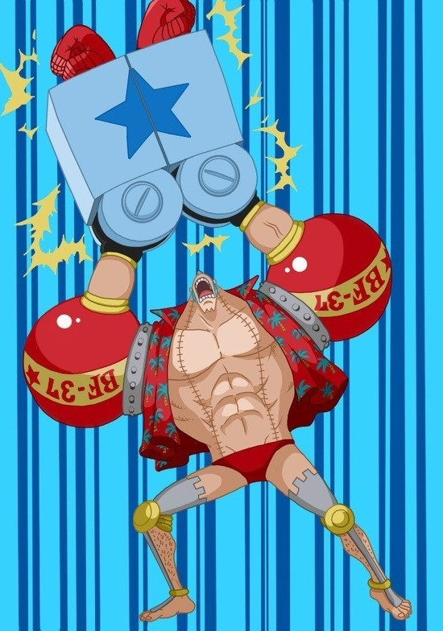

 존재하는 건 죄가 되지않아!!! 원피스의 등장인물. 밀짚모자 일당의 조선공. 몽키 D. 루피의 일곱번째 동료. 원래 워터 세븐의 해체업소 프랑키 패밀리의 우두머리였다. 사우전드 써니 호의 설계자이며 자신이 만든 '꿈의 배'가 '바다의 끝'에 도달하는 그 운명의 날을 자신의 눈으로 지켜보기 위해서 일당에 합류했다. 바다열차에 치여 망가진 몸을 폐선의 고철을 사용해 혼자 힘으로 사이보그로 개조했다. 팔이 닿지 않아 개조를 못한 신체 뒷면은 평범한 인간과 똑같다. 역사상 최초로 세계일주에 성공한 해적왕 골 D. 로저의 해적선 오로 잭슨 호를 만든 조선공 톰의 제자로 워터 세븐의 시장 아이스버그의 사제(師弟)다. 모델은 담당 성우 야오 카즈키. 야오 카즈키가 '코스코스프레프레'라는 방송에 나와서 직접 밝힌 프랑키의 탄생 경위는 다음과 같다. 이는 과거 초대 원피스 TVA 프로듀서가 원피스는 10~20년이 넘는 장기 방송이 될터인데, 10년째가 되면 한 집단이 유연하게 잘 굴러가기 힘들 타이밍이 올테니, 지금까지와 색다른 분위기를 가진 멤버에 대한 추가의 필요성을 이야기했다고 한다. 그러면서 동시에 오다 작가에게 넣었던 주문이 바로 "야오 카즈키를 밀짚모자 일당에 넣어라."라는 것. 이렇게 완성된 프랑키의 이미지에 담당 성우로서 상당한 영향을 주었다고 한다.[37]